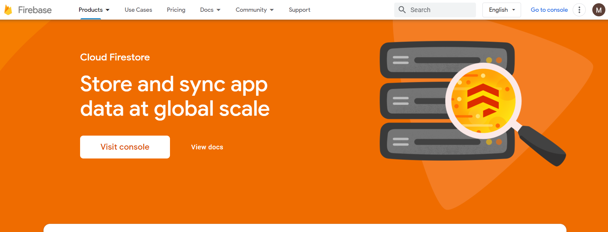
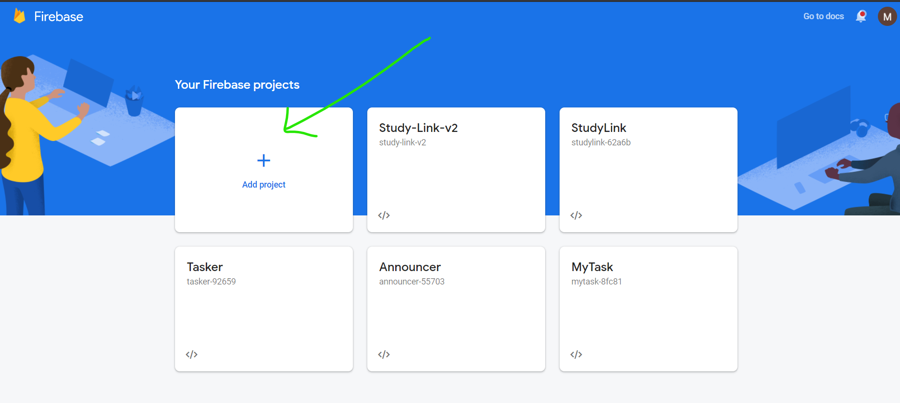
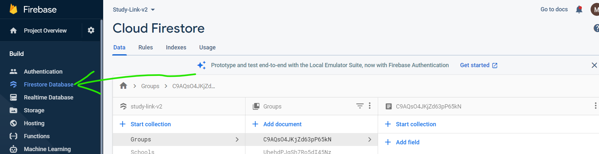

Введення в firebase
2. Відкрийте консоль. Та створіть firestore database



3. Збережіть у базі данних список користувачів з полями: name, lastname, email, phone
4. Підключіть вашу базу данних до html-сторінки. Використайте налаштування з вашої бази данних
<script src="https://www.gstatic.com/firebasejs/6.0.0/firebase-app.js"></script>
<script src="https://www.gstatic.com/firebasejs/6.0.0/firebase-firestore.js"></script>
<script>
const firebaseConfig = {
apiKey: "...",
authDomain: "...",
projectId: "...",
storageBucket: "...",
messagingSenderId: "...",
appId: "...",
measurementId: "...",
};
firebase.initializeApp(firebaseConfig);
var db = firebase.firestore();
</script>

5. Отримайте данні з бази данних та виведіть їх у консоль
<script>
db.collection("users").get().then((querySnapshot) => {
querySnapshot.forEach((doc) => {
console.log(doc.data());
});
});
</script>
6. Збережіть файл з підключенням до firebase у окремий файл та використовуйте його у майбутнії завданнях.
7. Виведіть користувачів отриманих з бази данних у таблицю на вашій веб сторінці